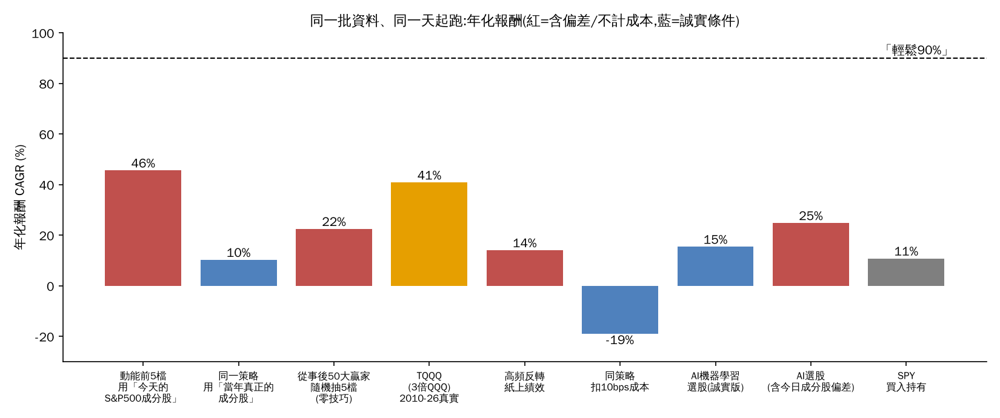
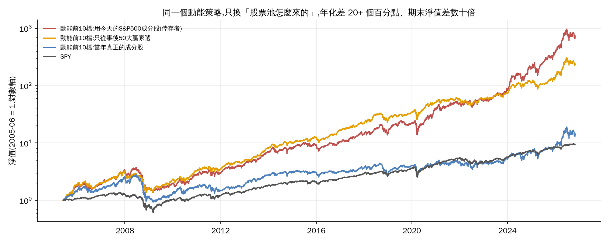
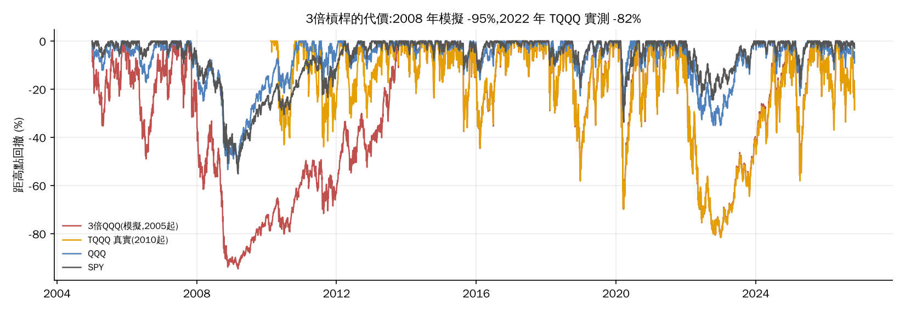

| 常見說法 | 製造高報酬的機制 | 我重現的結果(年化) |
|---|---|---|
| 集中持有動能最強的5–10檔 | 股票池是「今天的」S&P500,裡面全是後來才漲到進指數的贏家 | 倖存者版 46%(2023-26 142%)→ 當年成分股版 10% |
| 「選到NVDA/TSLA…」少數幾檔 | 事後才知道哪幾檔會漲;過去贏家明年排名只在第 49 百分位(=隨機) | NVDA 2023-26 年化 99%,但「去年最強10檔」隔年平均只贏大盤 5.8 個百分點(20年裡贏 11 年) |
| 2–3倍槓桿ETF(TQQQ/SOXL) | 2010–2026 是史上最長牛市之一;槓桿放大 Beta,不放大技巧 | TQQQ 41%、2010-19 49%,但回撤 -82%;2008年模擬 -95% |
| 高頻/每天進出 | 回測用收盤價成交、零成本、零滑價 | 紙上 14% → 扣 10bps 變 -19%(年換手 325 倍) |
| AI/機器學習選股 | 特徵看似很多,但預測力(IC)幾乎為零;偏差股票池讓它看起來有效 | 誠實版 15% vs SPY 14%;含偏差版 25%;IC t 值僅 0.9 |
| 某組參數/某個策略「回測超強」 | 掃幾百組參數挑最好的(過度擬合),或只秀最好的一段 | 10檔事後贏家籃子:挑選期 61% → 之後 18%;掃 537 組均線,最佳組 IS 48% → OOS 11% |
| 股票池(都用同一個策略:12-1動能,月調倉,成本10bps) | 全期 2005-26 | 2010-19 | 2020-26 | 2023-26 |
|---|---|---|---|---|
| 前5檔 · 今天的S&P500成分股(倖存者) | 46% / -63% | 32% / -41% | 90% / -45% | 142% / -45% |
| 前10檔 · 今天的S&P500成分股(倖存者) | 36% / -63% | 27% / -35% | 65% / -44% | 92% / -40% |
| 前5檔 · 只從「事後50大贏家」選 | 32% / -64% | 34% / -36% | 37% / -36% | 64% / -34% |
| 前5檔 · 當年真正的成分股 | 10% / -75% | 14% / -44% | 20% / -42% | 37% / -38% |
| 前10檔 · 當年真正的成分股 | 13% / -67% | 12% / -40% | 19% / -38% | 33% / -37% |
| 前20檔 · 當年真正的成分股 | 12% / -63% | 13% / -31% | 17% / -39% | 25% / -34% |
| 對照:同股票池「隨機抽5檔」(每月重抽,40組) | ||||
| 隨機5檔 · 今天成分股 | 平均 13% / 95分位 17% | 平均 16% / 95分位 22% | 平均 13% / 95分位 23% | 平均 16% / 95分位 30% |
| 隨機5檔 · 事後贏家 | 平均 22% / 95分位 27% | 平均 23% / 95分位 31% | 平均 24% / 95分位 32% | 平均 32% / 95分位 47% |
| 隨機5檔 · 當年成分股 | 平均 8.8% / 95分位 14% | 平均 11% / 95分位 16% | 平均 8.7% / 95分位 18% | 平均 11% / 95分位 22% |
| SPY 買入持有 | 11% / -55% | 13% / -19% | 15% / -34% | 21% / -19% |

設定:每月底算12-1個月動能,買最強N檔等權,持有一個月;訊號日隔天再多等一天成交;每邊成本10bps。「當年成分股」= 用維基百科 S&P500 增刪紀錄回推每個月底的真實成分股(含後來被剔除、被購併的),有價格資料的覆蓋率 2005年約71%、2010年74%、2015年81%、2020年92% — 缺的是已下市的公司(通常是輸家),所以這個「誠實版」仍然偏樂觀。
重點:同一套程式、同一個策略,倖存者版 46% vs 當年成分股版 10%。連「隨機抽5檔」只要股票池是事後贏家,就有 22%。當年成分股版的動能只有 13%(前10檔),落在隨機抽取的 95 分位(14%)附近,且 2010-19 的 12% 低於 SPY 的 13%。
| 動能前10檔,滾動窗口裡「年化≥90%」的比例 | 1年窗口 | 3年窗口 | 5年窗口 |
|---|---|---|---|
| 今天的S&P500成分股(倖存者) | 12.0%(中位數 33%) | 4.6%(中位數 32%) | 0.0%(中位數 29%) |
| 事後贏家50檔 | 3.0%(中位數 29%) | 0.0%(中位數 29%) | 0.0%(中位數 27%) |
| 當年真正的成分股 | 1.8%(中位數 13%) | 0.0%(中位數 8.1%) | 0.0%(中位數 8.4%) |
在當年成分股裡,沒有任何一檔股票能連續 5 年年化 ≥90%(2005–2021 每年起算,共 6544 檔次;最接近的是 NVDA 2019→2024 約 87%)。單年 ≥90% 的股票每年約 2.1%,而且「去年的前10名」今年表現是隨機的。
| 標的(每格:年化 / 最大回撤) | 全期* | 2010-19 | 2020-26 | 2023-26 | 備註 |
|---|---|---|---|---|---|
| QQQ 買入持有 | 15% / -53% | 18% / -23% | 20% / -35% | 29% / -23% | |
| TQQQ 3倍QQQ(真實ETF,2010-02起) | 41% / -82% | 49% / -58% | 30% / -82% | 70% / -58% | 最長水下 3.0 年 |
| SOXL 3倍半導體(真實ETF,2010-03起) | 34% / -90% | 41% / -73% | 24% / -90% | 73% / -88% | 最長水下 4.1 年 |
| 3倍QQQ(模擬,涵蓋2008) | 24% / -95% | 45% / -58% | 31% / -81% | 71% / -58% | 2009-03 谷底 -95% |
| 3倍QQQ + 200日線進出(模擬) | 19% / -65% | 18% / -59% | 38% / -56% | 48% / -37% | 進出 158 次 |
| 3倍SMH + 200日線進出(模擬) | 21% / -84% | 24% / -71% | 52% / -73% | 108% / -68% | 2023-26 是事後挑的視窗 |
| SPY 買入持有 | 11% / -55% | 13% / -19% | 15% / -34% | 21% / -19% |
* 真實ETF的「全期」是從上市日起算(TQQQ/SOXL 約2010年),所以沒有包含2008。模擬版驗證:TQQQ 模擬 vs 真實 年化 41% vs 41%,日報酬相關 0.999。

隱藏風險:單日最糟 -34%;波動衰減(震盪盤每天重置會侵蝕);加200日線進出沒有明顯改善(2010-19 18%,回撤仍 -59%),因為假突破來回被洗。我們前一個研究也已確認個股2倍ETF的成本年化約17%。
| 高頻短線反轉(每天買近2日最慘的10檔,持1天) | 全期 | 2010-19 | 2020-26 | 年換手 |
|---|---|---|---|---|
| 紙上績效: 收盤進出、0成本 | 14% | 12% | 14% | 325x |
| 加 10bps 成本 | -19% | -20% | -20% | 325x |
| 多等1天成交 + 10bps | -12% | -20% | -5.7% | 324x |
| 多等1天成交 + 25bps | -47% | -52% | -44% | 324x |
| 機器學習選股(梯度提升樹,每年用過去資料重訓,只做長倉前20名,月調倉) | 2011-26 全期 | 2010-19 | 2020-26 | 2023-26 |
|---|---|---|---|---|
| AI選股 前20名 (成分股, 10bps) | 15% / -57% | 16% / -37% | 15% / -57% | 24% / -27% |
| AI選股 前20名 (成分股, 0成本) | 17% / -57% | 17% / -36% | 16% / -57% | 25% / -27% |
| AI選股 前10名 (成分股, 10bps) | 14% / -60% | 19% / -40% | 7.9% / -60% | 14% / -31% |
| AI選股 前20名 (含今日成分股偏差, 10bps) | 25% / -52% | 25% / -31% | 25% / -52% | 45% / -28% |
| SPY | 14% / -34% | 13% / -19% | 15% / -34% | 21% / -19% |
| 隨機抽20檔(同一批股票,25組) | 平均 10% / 95分位 11% | |||
做法:15個特徵(1/3/6/12-1個月動能、5日反轉、60日波動、距52週高、成交值,與其橫斷面排名)→ 梯度提升樹預測下月相對報酬;從2011年起每年1月只用「標籤已經結束」的資料重訓。預測力(Spearman IC)平均 0.009,t = 0.9(門檻 2.5)→ 沒有可靠預測力。2010-19 看起來比 SPY 好一點,2020-26 反而輸。把今天成分股混進候選池(偏差)就立刻跳到 25% — 看起來很強的「AI」多半是這種偏差。
挑 2015–2020 漲最多的 10 檔(AMD, NVDA, TSLA, NFLX, AMZN, VEEV, MSCI, ALGN, NOW, MPWR),那段時間買入持有年化 61%;之後 2021–26 只剩 18%(SPY 14%)。再對這 10 檔掃 537 組均線交叉:選樣期最佳 48%(參數 15/250),之後 11%;全部組合中只有 0.2% 在之後贏過 SPY。選樣期與之後績效的相關係數 0.42。
終端的 universe 是 2026-10-31 用「現在」的 Beta≥1.3、波動≥35%、成交值≥1億篩出來的 170 檔,屬事後篩選。在這個池子裡隨機抽10檔(10bps)年化 16%(2010-19 12%),比當年成分股隨機抽的 9.3% 高出約 7 個百分點 — 這是股票池給的免費紅利。池內動能前10檔 22%(2010-19 18%),仍落在隨機抽取的 95 分位(18%)以內。先前研究裡常見的 60–70% 年化與「隨機進場也有 +59%」是逐筆交易的年化,和這裡的帳戶複利不同,不能直接相比;但方向一致:要看的是相對隨機的超額,不是絕對數字。帳戶層級的誠實數字(10檔、1%風險)是全期約 12%、2010-19 約 -3%,低於 SPY。
| 做法 | 誠實條件下年化 | 是否勝過SPY/隨機 | 隱藏風險 |
|---|---|---|---|
| 3倍槓桿 QQQ(TQQQ) | 41%(2010-19 49%) | 勝過SPY(單一牛市) | 回撤 -82%;2008同款 -95%;水下 3–6 年;樣本只有一個牛市 |
| 當年成分股動能前10 | 13% | ≈SPY、落在隨機區間內 | 回撤 -67%(SPY -55%);偏樂觀(缺下市股) |
| AI機器學習選股 | 15% | ≈SPY,IC不顯著 | -57% 回撤;2020-26 反而輸 SPY |
| 高頻反轉 | -19% | 輸 | 成本吃光 |
| 參數掃描/少數贏家 | 11% | 輸 | 過度擬合 |
reality/。